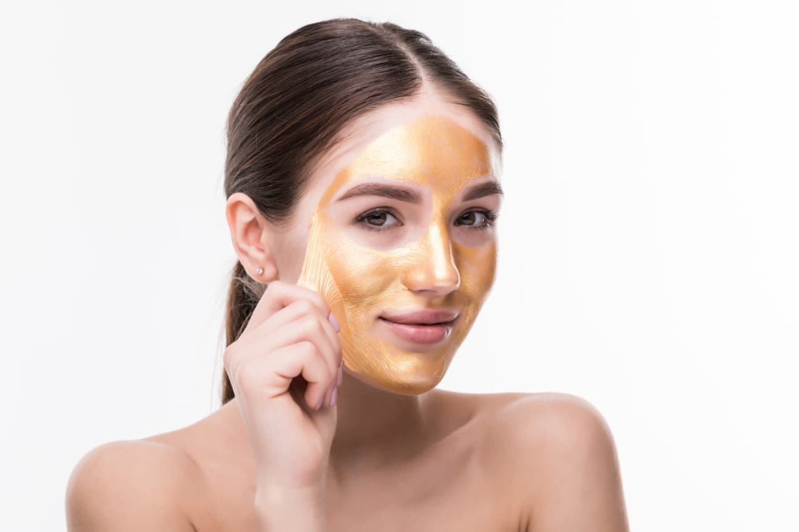
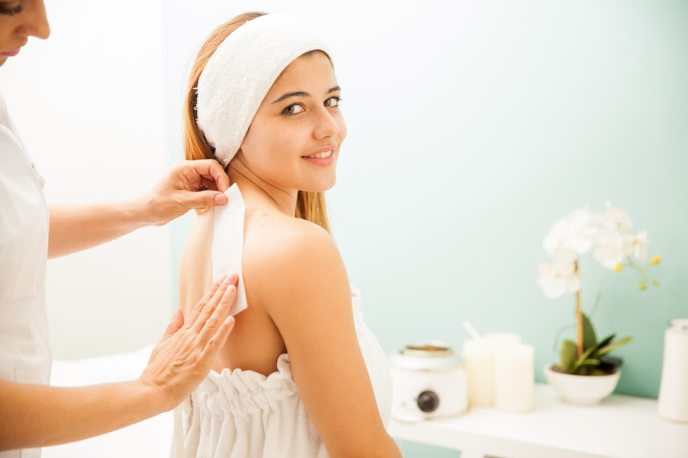
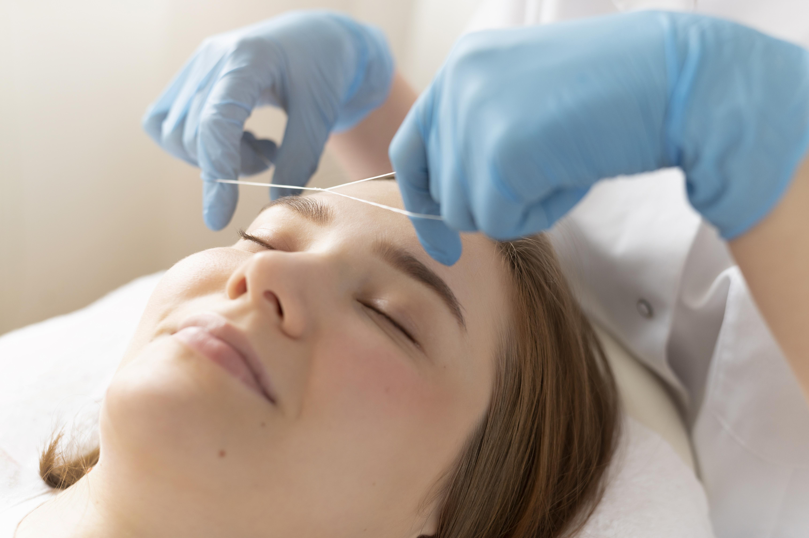

Hair Spa
Benefit of hair spa (हेयर स्पा के फायदे)
1.डैंड्रफ दूर करे(Removes Dandruff) 2.बालों को घना करे(Thickens Hair) 3.बालों की नमी बनाए रखे(Keeps Hair Moisturized)
4.बालों को चमक प्रदान करे(Adds Shine To Hair) 5.तनाव से मुक्ति(Reduces Stress)
हेयर स्पा बालों के लिए एक खास तरीके का हेयर ट्रीटमेंट
होता है। यह प्रक्रिया शैम्पू, कंडीशनर, तेल, मसाज और हेयर मास्क के साथ पांच चरणों में पूरी की जाती है। इससे न केवल सिर का मसाज होता है, बल्कि
बालों को पोषण भी प्राप्त होता है। साथ ही बालों की खोई हुई नमी और चमक भी वापस आती है।

Facial Massage
Benefit of Facial Massage (फेसियल मसाज के फायदे)
रक्त संचार में सुधार: यह चेहरे पर रक्त प्रवाह को बेहतर बनाता है, जिससे त्वचा को पोषण मिलता है और निखार आता है। त्वचा को टाइट करती है: नियमित मसाज त्वचा को कसने और ढीलेपन को कम करने में मदद करती है। तनाव और थकान से राहत: चेहरे और आंखों की मांसपेशियों को आराम मिलता है, जिससे तनाव दूर होता है। डार्क सर्कल और सूजन कम करना: आंखों और आइब्रो के आसपास की मालिश से डार्क सर्कल और आंखों के नीचे की सूजन कम होती है।

Bridal Makeup
Benefit of Bridal Makeup (ब्राइडल मेकउप के फायदे)
ब्राइडल मेकअप का मतलब है किसी शादी समारोह या खास मौके पर दुल्हन के लिए किया जाने वाला मेकअप जो लंबे समय तक टिका रहे, तस्वीरों में खूबसूरत दिखे और दुल्हन को आत्मविश्वास से भरपूर महसूस कराए। इसके लिए त्वचा को साफ व मॉइस्चराइज करके, प्राइमर लगाकर शुरुआत की जाती है। फिर हाई-कवरेज फाउंडेशन और कंसीलर से एक समान रंगत लाई जाती है। गालों पर ब्लश, चेहरे पर हाइलाइटर और कंटूरिंग की जाती है। आखिर में सेटिंग स्प्रे से मेकअप को लंबे समय तक टिकाऊ बनाया जाता है।

Clean-Up
Benefit of Clean-Up (क्लीनअप के फायदे)
क्लीनअप के फायदों में त्वचा से अतिरिक्त तेल, गंदगी, ब्लैकहेड्स और व्हाइटहेड्स को हटाना, त्वचा में चमक लाना, उसे गहराई से साफ करना और रोमछिद्रों को खोलना शामिल है। यह ऑयली और संवेदनशील त्वचा के लिए फायदेमंद है, त्वचा की मृत कोशिकाओं को हटाता है, और त्वचा को ताज़गी और नमी प्रदान करता है। मुंहासों का खतरा कम करता है। त्वचा को मॉइस्चराइज रखना: क्लीनअप चेहरे पर लंबे समय तक नमी बनाए रखने में मदद करता है, खासकर ड्राई और एक्ने प्रोन स्किन के लिए यह बेहतरीन है।

Bleach
Benefit of Bleach (ब्लीच के फायदे)
ब्लीच के फायदों में त्वचा को निखारना, काले धब्बे और टैनिंग कम करना, त्वचा की रंगत को सुधारना और चेहरे के बारीक बालों को हल्का करना शामिल है, जिससे त्वचा में ग्लो और चमक आती है और त्वचा मुलायम दिखती है। यह त्वचा से गंदगी और मृत कोशिकाओं को भी साफ करती है। ब्लीच का असर अस्थायी होता है और लगभग 2-4 हफ्तों तक रहता है।

Wax
Benefit of Wax (वैक्स के फायदे)
वैक्सिंग कराने के कई फायदे हैं, जैसे त्वचा का मुलायम होना, मृत कोशिकाओं का निकलना, बालों का देर से उगना, त्वचा की चमक बढ़ना और कटने या अंदरूनी बाल उगने का खतरा कम होना। यह अनचाहे बालों को जड़ों से हटाता है, जिससे बाल लंबे समय तक दोबारा नहीं उगते और दोबारा उगने पर भी मुलायम होते हैं। मुलायम और चिकनी त्वचा: वैक्सिंग से न सिर्फ अनचाहे बाल हटते हैं, बल्कि त्वचा से रुखी और मृत त्वचा भी निकल जाती है, जिससे त्वचा चिकनी और मुलायम हो जाती है। बाल देर से उगते हैं: वैक्सिंग बालों को जड़ से हटाती है, इसलिए बाल दोबारा उगने में अधिक समय लगता है, और पहली बार उगने वाले बाल भी पतले और मुलायम होते हैं।

Hair Style
Benefit of Hair Style (हेयर स्टाइल के फायदे)
हेयर स्टाइलिंग से व्यक्तित्व निखरता है, आत्मविश्वास बढ़ता है, और लुक आकर्षक बनता है। इससे बालों का स्वास्थ्य सुधरता है, उलझने और रूखेपन की समस्या कम होती है, और बालों की ग्रोथ में मदद मिलती है। उचित हेयर स्टाइल से आप किसी भी अवसर के लिए तैयार हो सकते हैं और अपनी व्यक्तिगत शैली को दर्शा सकते हैं। आकर्षक लुक: हेयरस्टाइल आपके समग्र रूप को निखारती है और आपको अधिक आकर्षक बनाती है।

D tan
Benefit of D tan (डी-टैन के फायदे)
डी-टैन का मतलब है सूर्य की हानिकारक किरणों से होने वाले टैन (सांवलापन) को हटाना | हानिकारक UV किरणों से बचाव: प्रदूषण और सूरज की हानिकारक UVA और UVB किरणें त्वचा को नुकसान पहुंचाती हैं और मेलेनिन का उत्पादन बढ़ाती हैं, जिससे त्वचा टैन हो जाती है। त्वचा की रंगत एक समान करना: डी-टैन से टैनिंग के कारण असमान त्वचा रंगत को ठीक करने में मदद मिलती है। त्वचा की चमक वापस लाना: ये उत्पाद त्वचा की मृत कोशिकाओं को हटाते हैं, जिससे त्वचा ताज़ा, चमकदार और कायाकल्पित दिखती है।

Hair Cut
Benefit of Hair Cut (हेयर कट के फायदे)
हेयरकटिंग, या बाल काटना, बालों को कैंची या रेज़र जैसे औजारों से काटने, आकार देने और पतला करने की प्रक्रिया है, जिसका मुख्य उद्देश्य बालों को एक खास स्टाइल या ट्रिमिंग देना होता है। नियमित बाल कटवाने से बालों का स्वास्थ्य सुधरता है, दोमुँहे बाल हटते हैं, और बालों में घनापन तथा उछाल आ सकता है। एक अच्छा हेयरकट आत्मविश्वास बढ़ाता है और व्यक्ति की शैली को दर्शाता है।

Threading
Benefit of Threading (थ्रेडिंग के फायदे)
थ्रेडिंग एक बाल हटाने की प्राचीन और सटीक विधि है जिसमें बालों को जड़ से निकालने के लिए एक विशेष मुड़े हुए सूती धागे
का उपयोग किया जाता है, जो भारत, ईरान और मध्य एशिया में उत्पन्न हुई थी। यह भौहें, ऊपरी होंठ, और ठुड्डी जैसे चेहरे के बालों के लिए विशेष रूप से प्रभावी है,
क्योंकि यह त्वचा को नुकसान पहुँचाए बिना सटीक रेखाएं बनाती है और संवेदनशील त्वचा वाले लोगों के लिए एक कोमल विकल्प है।
थ्रेडिंग त्वचा के सबसे छोटे बालों
को भी हटा सकती है, जिससे भौंहों को अत्यधिक स्पष्ट और परिभाषित आकार मिलता है।

Mehandi
Benefit of Mehandi (मेहंदी के फायदे)
मेहंदी, या हिना, हिना के पौधे की पत्तियों से प्राप्त एक अस्थायी प्राकृतिक रंग है, जिसका उपयोग त्वचा, बालों और नाखूनों को रंगने के लिए किया जाता है. भारत और दक्षिण एशिया में यह एक प्राचीन और लोकप्रिय श्रृंगार है, जिसे विशेष रूप से शादियों, त्योहारों और धार्मिक अनुष्ठानों में इस्तेमाल किया जाता है. इसके लाल-भूरे रंग के दाग कई हफ्तों तक बने रहते हैं और माना जाता है कि यह सौभाग्य और समृद्धि का प्रतीक है.

Many More
Like (जैसे)
ManiCure, PediCure, Hair Oil Massage, Self Makeup, Powder Bleach, Katori Wax, Smoky Eye, Trimming, CTM, Katori Wax, Permanent Hair Style, Black Spot, Stage Makeup, And Many More......